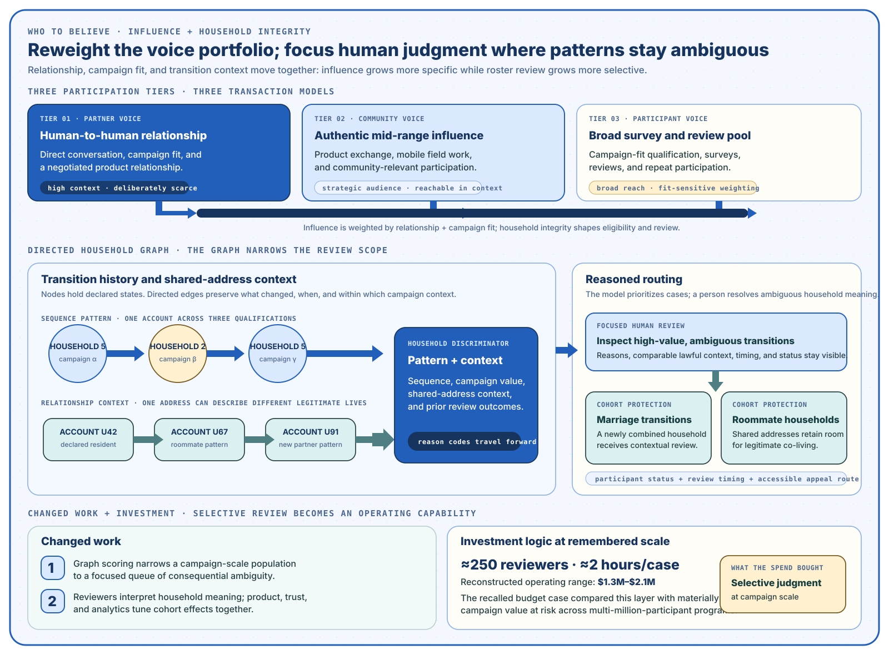
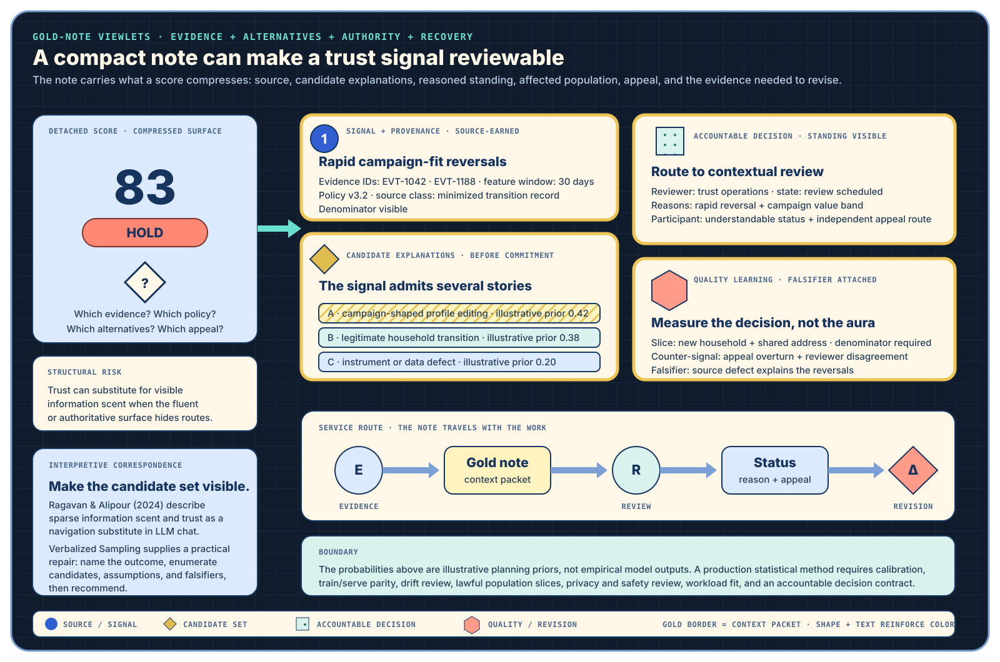

I. Solution Architecture
I.a Debrief
The platform connected pre-launch research, post-launch distribution, consumer reviews, influencer programs, partner dashboards, and regional adverse-event signals. Clients needed access to people whose lived context matched a campaign, while participants needed product experiences, surveys, and media capture to fit the places where they actually worked.
Audience procurement at specificity was the deeper product. Reviews were one output of a system that joined participants, campaigns, products, household context, and client decisions. The operating challenge was to preserve useful specificity while strengthening participant dignity, regional purpose, and client trust.
I.b The Bottleneck — Who To Believe
The platform had abundant feedback. Product value concentrated in the contributors whose authentic communities, sustained participation, and lived context could improve research and market decisions. Mid-range influencers carried that value, but their participation required a different exchange: direct relationship, product fit, field support, and attention to their own channels.
Campaign-misfit behavior created a second decision surface. Some participants changed household or therapy attributes to qualify for high-value campaigns. The same patterns could also describe marriage, roommates, caregiving, or other legitimate life changes. The business needed roster integrity and the participant needed contextual judgment.
Focalization — Directing attention toward what can change the named decision while keeping the wider context recoverable.
Here, the decision is whose contribution should shape research or market action; contributor context, competing explanations, and an appeal route remain recoverable beside the weighting signal.
I.b.i Barriers to Adoption
| Barrier | Why it resisted adoption | Context needed for a fair decision | Operating response |
|---|---|---|---|
| Reviewer identity uncertainty | A consequential disposition could look like an anonymous platform action when reviewer standing, assignment, and disagreement were invisible. | Named reviewer role, bounded reasons, decision timing, comparable lawful context, and an independent appeal route. | Explicit review-case state, reasoned disposition, service level, and appeal assignment. |
| Platform signal gaming | Campaign-shaped profile changes diverted high-value product and could corrupt the population represented in research or reviews. | Transition history, campaign and value band, prior decisions, and a legitimate-life-change explanation. | Directed-graph signals focus attention; people distinguish gaming from marriage, roommates, caregiving, and other real change. |
| Regulatory adjacency | Health-adjacent claims, special-category data, endorsement activity, and possible adverse-event signals could be mistaken for a formal regulated assessment. | Purpose, region, provenance, receiving party, retention, and the boundary between platform routing and accountable assessment. | Purpose-bound processing and an explicit handoff to the regulated party; the platform preserves context without claiming assessment authority. |
| Cross-territory source weighting | Regional stores, access rules, campaign populations, consent states, and policy contexts made a single undifferentiated trust score misleading. | Region, policy and model version, observation window, source class, denominator, and declared data movement. | One evidence contract with region- and purpose-aware handling; cohort scorecards retain their slices and denominators. |
| Incumbent resistance to reweighting | Volume metrics, survey workflows, campaign economics, and familiar operating roles all encoded the previous answer to “whose voice counts.” | Changed work, contributor exchange, review capacity, unit economics, quality signals, and the condition for revising the scheme. | Stage the three-tier operating model, expose review investment, and evaluate contribution quality beside volume and recovery signals. |
The barriers synthesize the canonical participant account with the present-day WTB platform and trust-decision contracts. Reviewer standing, versioned reasons, appeal, cohort scorecards, and declared regional movement are current proposed controls; they are not claims about every historical production detail.
I.c The Intervention
- Direct partnership with the mid-tier voice. Product, schedule, brand guidance, and field support moved into a relationship the contributor could use.
- Three tiers of voice. Direct partnership, survey participation, and bulk response received distinct transaction models and signal expectations.
- A guardian layer for roster legitimacy. Attribute transitions focused human attention on cases whose context materially changed the decision.
- Regulatory positioning as commercial posture. Purpose-specific processing, disclosure support, and regional handling became part of client trust.



I.d Outcomes
| Observed direction | Source qualification | Enterprise reading | Condition that remained |
|---|---|---|---|
| New signups increased approximately 20% | Participant recollection; denominator and causal share remain open. | The reported rise is consistent with stronger contributor reach; causal attribution remains open. | Growth still depended on participant fit and campaign exchange. |
| Problematic logins fell approximately 10%, then about 50% by year end | Participant recollection; the two reported checkpoints establish direction rather than a continuous trend line or isolated causal share. | The sequence is consistent with staged review and intervention. | Marriage and roommate patterns still required contextual judgment. |
| Total logins fell while activity per session increased | Directional participant account. | The pattern is consistent with more useful work happening inside each session; route-level instrumentation would separate that effect from cohort or campaign changes. | Architecture still had to preserve those contexts through later change. |
| The review tier absorbed ambiguous cases | Operating reconstruction: roughly 250 reviewers, an estimated two additional hours per reviewed case, and approximately $1.3–2.1M in review economics. | Machine classification purchased a smaller, higher-value human decision surface. | The unit economics depended on campaign value supporting that review capacity. |
I.e Repeatability
- Reweight whose feedback counts: identify the contributor tier the product wants to sustain, then redesign the exchange around that tier.
- Let high-value participation invert into the field: direct partnership may move staff toward contributors instead of scaling through forms.
- Make roster legitimacy a client-facing ability: show how contextual review protects both campaign fit and legitimate participants.
- Diagnose patterns by the problem they solve: bind controls to the task context that makes them useful.